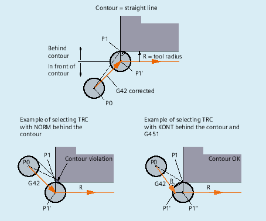

Comparison of NORM and KONT
KONT only differs from NORM when the tool start position is behind the contour:
| Notice |
Risk of collisionModified approach/retract angles as a result of the tool radius compensation must be taken into account during programming in order that collisions are avoided. |